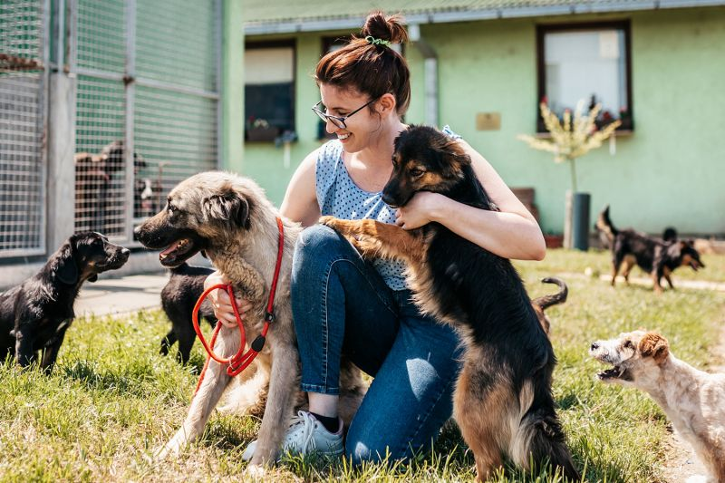

Н А Ш А К О М А Н Д А

Наша команда притулку для тварин присвячена наданню найкращої можливої догляду та любові усім нашим бездомним улюбленцям.
Наші співробітники - справжні професіонали, які віддані своїй роботі та старанно працюють, щоб забезпечити комфорт та безпеку
для кожної тваринки. Завдяки нашій турботі і підтримці, ми допомагаємо бездомним тваринам знайти нові люблячі домівки. Ми пишаємося
нашою командою, яка разом працює для створення кращого світу для наших чотирилапих друзів.